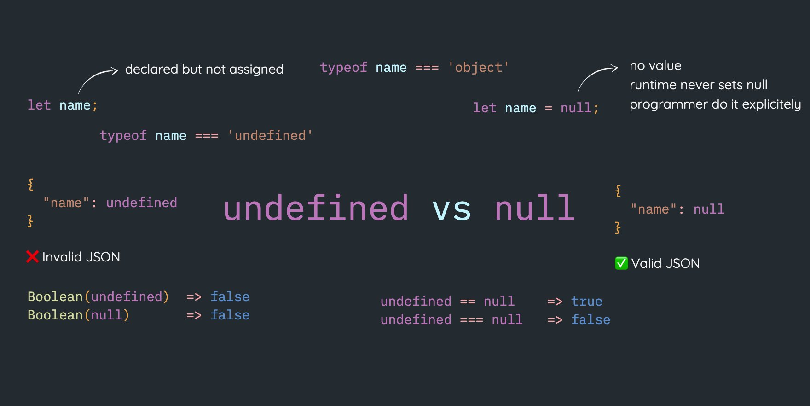

Var, Let, and Const: What's the Difference?
Var
The var keyword is the oldest and most basic way to declare
variables in JavaScript. Variables declared with var are
function-scoped, which means that they are accessible within the
function in which they are declared, and in any nested functions.
var variables can be reassigned, and they can be declared without
being initialized.
Let
The let keyword was introduced in ES6 (ECMAScript 2015). Variables
declared with let are block-scoped, which means that they are
accessible within the block in which they are declared. Blocks are
defined by curly braces ({}). let variables can be reassigned, but
they cannot be re-declared.
Const
The const keyword was also introduced in ES6. Variables declared
with const are constant, which means that they cannot be reassigned.
const variables are also block-scoped.
Which keyword should you use?
In general, you should use let for variables that you may need to
reassign, and const for variables that you know will not change. You
can use var if you need to support older browsers that do not
support let or const.
Here are some additional things to keep in mind when using var, let,
and const:
-
Variables declared with var are hoisted to the top of their scope,
even if they are declared later in the code. This means that they
can be accessed before they are declared, which can lead to
errors. Variables declared with let and const are not hoisted.
-
Variables declared with const must be initialized when they are
declared. This means that you cannot declare a const variable and
then initialize it later in the code.
I hope this article helps you understand the differences between
var, let, and const in JavaScript.
Null and Undefined in JavaScript

Null and undefined are two special values in JavaScript that represent
the absence of a value. Null is used to represent the intentional
absence of a value, while undefined is used to represent the
unintentional absence of a value.
Undefined
Undefined is the default value for a variable that has not been
assigned a value. It is also the value that is returned by the
typeof operator when it is applied to an undefined variable.
Here are some examples of how undefined is used in JavaScript:
-
A variable that is declared but not assigned a value is undefined.
-
The value returned by a function that does not return a value is
undefined.
-
The value of an object property that does not exist is undefined.
Null
Undefined is the default value for a variable that has not been
assigned a value. It is also the value that is returned by the
typeof operator when it is applied to an undefined variable.
Here are some examples of how undefined is used in JavaScript:
-
A variable can be assigned the value of null to indicate that it
does not have a value.
-
A function can return the value of null to indicate that it did
not find the value that it was looking for.
-
An object property can be set to the value of null to indicate
that the property does not have a value.
When to Use Null and Undefined
The following are some guidelines for when to use null and undefined
in JavaScript:
-
Use undefined to represent the unintentional absence of a value.
For example, if a variable is declared but not assigned a value,
it should be undefined.
-
Use null to represent the intentional absence of a value. For
example, if a function does not find the value that it is looking
for, it can return the value of null.
-
Avoid using null and undefined interchangeably. They have
different meanings and should be used in different contexts.
I hope this article was helpful. Let me know if you have any other
questions.
What is a REST API?

A REST API (Representational State Transfer Application Programming
Interface) is an architectural style for designing web services. It
defines a set of constraints that must be followed in order to be
considered RESTful. These constraints include:
-
Resource-oriented: The API must be organized around resources,
which are nouns that represent things in the real world. For
example, a REST API for a blog might have resources for posts,
comments, and users.
-
Stateless: The API must be stateless, which means that each
request must be self-contained and should not rely on any previous
requests. This makes the API more scalable and efficient.
-
Client-server: The API must be client-server, which means that the
client and server must be separate entities. This makes the API
more flexible and secure.
-
Cacheable: The API should be cacheable, which means that the
client should be able to cache responses from the server. This can
improve performance and reduce load on the server.
-
Uniform interface: The API must use a uniform interface, which
means that all requests and responses must use the same HTTP verbs
and message formats. This makes the API easier to use and
understand.
Benefits of REST APIs
REST APIs offer a number of benefits, including:
-
Simple and easy to use: REST APIs are based on simple concepts
that are easy to understand and implement. This makes them a good
choice for developers of all skill levels.
-
Flexible and scalable: REST APIs are flexible and can be used to
build a wide variety of applications. They are also scalable,
which means that they can be easily adapted to handle increasing
traffic.
-
Efficient and reliable: REST APIs are efficient and reliable,
which makes them a good choice for applications that require high
performance.
-
Secure: REST APIs can be made secure by using encryption and other
security measures.
Examples of REST APIs
Some popular examples of REST APIs include:
-
The GitHub API: This API allows developers to access information
about GitHub repositories, issues, and pull requests.
-
The Google Maps API: This API allows developers to integrate
Google Maps into their applications.
-
The Twitter API: This API allows developers to access tweets,
users, and other information from Twitter.
-
The Stripe API: This API allows developers to integrate Stripe
payment processing into their applications.
Conclusion
REST APIs are a popular choice for developers who want to build
applications that can communicate with other systems over the
internet. They are simple, flexible, scalable, efficient, and
secure, which makes them a good choice for a wide variety of
applications.
I hope this article was helpful.